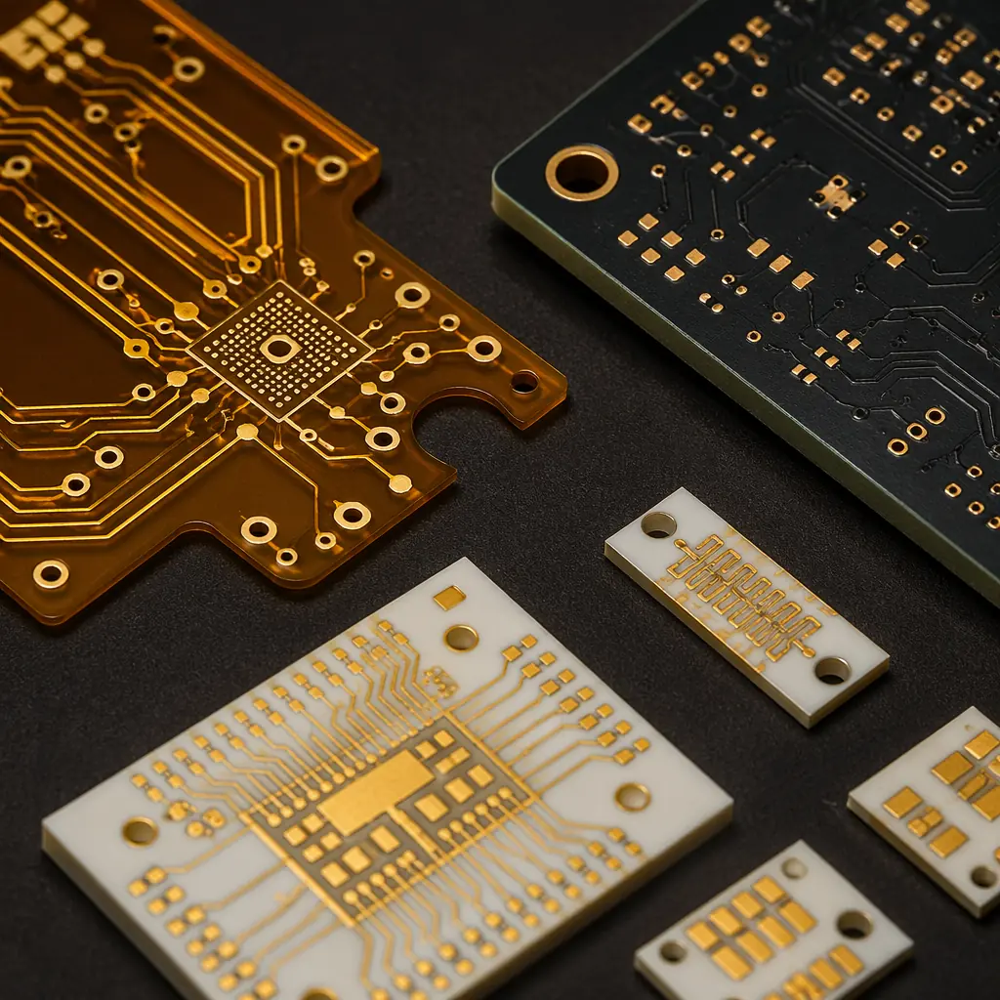

A PCB inside a patient monitor, an infusion pump, or an implantable cardiac device carries a different burden than a PCB in a consumer product. The requirement is not "works most of the time" — it is "cannot fail, ever, under any specified condition." Medical device PCBs are manufactured to IPC Class 3, the highest workmanship classification in the electronics industry, and are subject to regulatory frameworks — ISO 13485, FDA 21 CFR Part 820, and EU MDR — that extend deep into the supply chain.
At Huaxing PCBA, we manufacture medical-grade PCBs under IPC-A-610 Class 3 acceptance criteria with full lot-level traceability. This guide covers what medical device OEMs need to know before selecting a PCB supplier: the standards, the materials, the validation, and the questions that separate a capable manufacturer from a risk.
What Makes Medical PCBs Different from Commercial Boards
The difference between a commercial-grade PCB and a medical-grade PCB is not the substrate or the copper — it is the margin for error. IPC-A-610 defines three classes:
| Class | Target | Defect Tolerance | Example Application |
|---|---|---|---|
| Class 1 | General electronic products | Functional failure only | Consumer toys, disposable gadgets |
| Class 2 | Dedicated service products | Intermittent failure acceptable if not safety-critical | Laptops, telecom equipment, industrial controls |
| Class 3 | High-performance / life-support | Zero defect tolerance — no condition that could cause failure | Pacemakers, ventilators, surgical instruments, diagnostic imaging |
In practice, this means a Class 3 board cannot have: barrel fill below 75% in any plated through-hole, annular ring breakout exceeding 90° of the hole circumference, solder wicking that reduces conductor spacing, or lifted lands on any pad — conditions that would be acceptable in Class 2 and routine in Class 1. A 32-layer medical imaging board at Huaxing undergoes 3× more AOI inspection passes than an equivalent industrial board, because the acceptance window is tighter at every station.
IPC Class 3: The Medical-Grade Manufacturing Standard
IPC Class 3 is not just a tighter version of Class 2. It changes the manufacturing process at a structural level:
Plated Through-Hole Requirements
Class 3 mandates minimum barrel copper thickness of 25 μm (1 mil) with no more than one void per hole and no void exceeding 5% of the barrel length. This is tested on microsections from every production panel, not sampled. For medical devices that undergo thermal sterilization (steam autoclave at 121–134°C, EtO gas exposure, or gamma irradiation), through-hole reliability after thermal cycling is the primary failure mode — and the one Class 3 directly addresses.
Annular Ring and Breakout
Class 3 requires a minimum annular ring of 50 μm (2 mil) on external layers and 25 μm (1 mil) on internal layers. At Huaxing, we design for a minimum 75 μm external annular ring to provide margin against drill wander on high-layer-count boards. This is especially critical for HDI designs with microvias, where a 50 μm annular ring on a 100 μm laser-drilled via leaves zero room for misregistration.

Material Selection for Medical Device PCBs
Medical PCBs face conditions that standard FR-4 substrates were never designed to handle. Material selection must account for the device's sterilization method, operating environment, and regulatory classification:
| Sterilization Method | Temperature / Exposure | Recommended Substrate | Why |
|---|---|---|---|
| Steam Autoclave | 121–134°C, saturated steam, 15–30 min | High-Tg FR-4 (≥170°C) or Polyimide | Standard FR-4 Tg of 130°C is too close to sterilization temperature; Z-axis expansion destroys vias |
| EtO Gas | 37–63°C, humidity, 2–6 hours | High-Tg FR-4 with ENIG finish | OSP and immersion silver oxidize under extended humidity exposure |
| Gamma Radiation | 25–40 kGy cumulative dose | Polyimide or Ceramic | FR-4 epoxy embrittles under gamma; polyimide maintains flexibility past 50 kGy |
| Hydrogen Peroxide Plasma | 45–55°C, low-pressure plasma | High-Tg FR-4 or Rogers | Plasma can etch exposed copper if solder mask coverage is incomplete |
Surface finish matters. ENIG (electroless nickel immersion gold) is the dominant finish for medical PCBs because it provides a flat, oxidation-resistant surface with excellent wire bondability — important for implantable sensors and MEMS devices. For ENIG vs alternative finishes, immersion silver offers a lower-cost option but has a shorter shelf life and is incompatible with sulfur-rich sterilization environments.
Implantable devices add biocompatibility requirements. While the PCB itself is typically encapsulated, any leachable materials from the substrate, solder mask, or surface finish must be characterized. Polyimide substrates are preferred for flexible implantable circuits because they pass ISO 10993 cytotoxicity testing — a requirement that standard FR-4 cannot meet without hermetic encapsulation. For rigid-flex designs in wearable medical devices, the adhesive systems in the flex layers must also be biocompatibility-tested.
Cleanliness, Contamination Control & Biocompatibility
Ionic contamination on a medical PCB is not just a reliability problem — it is a patient safety problem. Residual flux, plating salts, or handling contaminants can cause:
- Dendritic growth under bias voltage in humid environments (e.g., inside a ventilator's humidified air path), creating intermittent shorts that are nearly impossible to diagnose in the field
- Electrochemical migration that degrades high-impedance sensor inputs, producing drift in diagnostic readings — a failure mode that can go undetected until the device produces clinically incorrect data
- Corrosion of wire bonds in implantable sensor packages, where even nanometer-scale corrosion changes electrical characteristics

Huaxing's medical PCB line enforces ionic contamination limits of <1.56 μg/cm² NaCl equivalent — the IPC-6012 Class 3 requirement — verified by resistivity of solvent extract (ROSE) testing on every production lot. Boards are processed in a dedicated clean zone with HEPA-filtered air, ESD-controlled workstations, and DI water final rinse (resistivity ≥18 MΩ·cm). Operators wear full cleanroom garments and gloves; bare-hand contact with any board surface is prohibited after copper etch.
Key question for your supplier: "What is your ionic contamination limit for medical-grade PCBs, and do you test every lot or sample?" If the answer is anything above 1.56 μg/cm² or "we test per batch," the supplier is running a commercial line dressed as a medical line.
Traceability & Documentation: The Paper Trail That Proves Compliance
What separates medical PCB manufacturing from commercial manufacturing is not the equipment — it is the documentation. A Class 3 medical board must be traceable from finished assembly back to the raw laminate lot, including every process step, every inspection result, and every operator who touched it.
At Huaxing, each medical PCB lot receives:
- Unique lot number laser-marked on the board or panel frame, linked to a digital manufacturing record
- Material certifications for substrate lot, copper foil lot, solder mask batch, and surface finish chemistry — retained for 10 years minimum (per ISO 13485:2016, §7.5.3.2.2)
- Process traveler documenting every station: drill, PTH, pattern plate, etch, solder mask, surface finish, electrical test, AOI, final inspection — with timestamps and operator IDs
- Microsection reports from coupon coupons on every panel, with photomicrographs of plated through-hole cross-sections at 200× magnification
- Certificate of Conformance (CoC) referencing the applicable IPC-6012 Class 3 performance specification and any customer-specific requirements (CSR)
This documentation is not bureaucratic overhead — it is a regulatory requirement. FDA 21 CFR Part 820.80 requires device manufacturers to maintain "device history records" that demonstrate each unit was manufactured in accordance with the device master record. If your PCB supplier cannot provide full lot traceability, your own FDA submission is incomplete. For guidance on evaluating supplier documentation during factory audits, see our PCB supplier audit checklist.
Testing & Validation: What Gets Inspected Gets Built Right
Medical device PCBs require testing beyond standard electrical continuity. The testing protocol is designed to catch defects that electrical test alone cannot find — latent defects that manifest only under stress conditions:
100% Automated Optical Inspection (AOI)
Post-reflow and post-assembly, with Class 3 defect libraries that flag annular ring violations below 50 μm, solder bridging, and insufficient fillet. This is not the same AOI recipe used for commercial boards — the acceptance thresholds are tighter across all parameters.
X-Ray Inspection for Hidden Joints
BGA, QFN, and any component with hidden solder joints receives 100% X-ray inspection at multiple angles. Void percentage is measured; Class 3 typically requires <15% void area per joint for BGAs.
Thermal Shock / Thermal Cycling
Per IPC-TM-650 method 2.6.7.1: boards cycled from −65°C to +150°C (or application-specific range) for 500–1,000 cycles. Post-cycling, every plated through-hole is microsectioned to check for barrel cracks. This is the gold-standard test for sterilization-resistant PCBs.
Impedance TDR Testing
For medical imaging and diagnostic equipment operating at high frequencies, controlled impedance with ±5% tolerance is mandatory. TDR measurements are taken on every panel, not sampled — one out-of-spec trace on a 32-layer CT scanner board can render the entire panel scrap.
Flying Probe + ICT + Functional Test
The medical testing stack: flying probe for bare-board netlist verification, in-circuit test for component-level faults, and custom functional test fixtures that simulate the device's operating conditions. A ventilator control board at Huaxing cycles through all three before it ships.
How to Qualify a Medical PCB Manufacturer
Selecting a medical PCB supplier is not the same as selecting a general PCB supplier. Here are the five dimensions that matter:
1. Certifications — Not Just on Paper
ISO 13485:2016 is the medical device quality management standard. It extends ISO 9001 with additional requirements for risk management, design control, and traceability. A supplier claiming "medical capability" without ISO 13485 certification is operating outside the regulatory framework. IATF 16949 (automotive) is also relevant — its process control requirements overlap significantly with medical requirements — but it does not substitute for ISO 13485's device-specific clauses.
At minimum, verify: ISO 9001:2015, ISO 13485:2016, IPC-A-610 Class 3 operator certification, and UL recognition. Huaxing holds all four plus IATF 16949:2016 for automotive-grade process control applied to medical lines.
2. Process Validation, Not Just Capability Claims
Every manufacturer claims to do Class 3. Ask for the process validation data: IQ/OQ/PQ (Installation Qualification, Operational Qualification, Performance Qualification) reports for the specific line that will produce your boards. A legitimate supplier has these on file; a supplier that "can do Class 3 when needed" does not.
3. Dedicated Medical Line vs. Shared Line
A dedicated medical line with documented contamination controls and segregated tooling is the gold standard. A shared line that processes medical boards alongside commercial boards is a risk — cross-contamination, relaxed operator discipline, and mixed inspection criteria are documented failure modes. Ask whether medical boards run on a dedicated line and, if not, what segregation procedures are in place.
4. Traceability Infrastructure
Can the supplier trace a failed board back to the specific laminate lot, copper foil lot, plating bath, and reflow oven profile — within 24 hours? If the answer is "we'd need a few days to pull that together," the traceability system does not meet medical requirements. Our turnkey assembly service includes component-level lot traceability with digital records retained for 10 years, meeting ISO 13485 §7.5.9.2 requirements for implantable and life-sustaining devices.
5. Non-Disclosure and Regulatory Support
A medical PCB supplier should be comfortable signing a comprehensive NDA and providing documentation packages that support your regulatory submission: process FMEAs, material declarations for REACH/RoHS, sterilization compatibility data, and biocompatibility test reports for materials that contact patient tissue. If a supplier hesitates to share process documentation, they are not a medical supplier — they are a commercial supplier willing to accept a higher price.

The Cost of Getting It Wrong
Medical device recalls triggered by PCB failures are rare — but when they happen, the cost is catastrophic. A single field failure in a Class III device (pacemaker, implantable defibrillator, neurostimulator) triggers an FDA adverse event report, potentially a recall affecting thousands of implanted units, and liability exposure measured in tens of millions of dollars. Even in Class II devices (infusion pumps, patient monitors, surgical instruments), a systemic PCB reliability issue discovered post-market means a CAPA investigation, a 510(k) supplement, and months of manufacturing downtime.
The cost difference between a Class 2 PCB and a Class 3 PCB is typically 15–40% depending on layer count and complexity. On a $200 patient monitor BOM, that is roughly $8–20 per board — less than the cost of one customer support call, let alone a field replacement.
Bottom line: If your device touches a patient — directly or indirectly — specify IPC Class 3 and qualify your supplier against the five dimensions above. The premium pays for itself the first time a board does not fail in the field.
At Huaxing PCBA, we manufacture medical-grade PCBs under ISO 13485:2016 and IPC-A-610 Class 3, with 10-year lot traceability, dedicated clean-zone production, and full validation documentation. Our facility in Shenzhen runs 8 SMT lines with AOI, X-ray, SPI, ICT, and FCT — all in-house — producing 8 million solder joints per day at a 99.2% on-time delivery rate. Whether you need prototype quantities for design verification or production volumes for a commercial launch, contact our engineering team with your specifications for a technical review and quote within 24 hours.